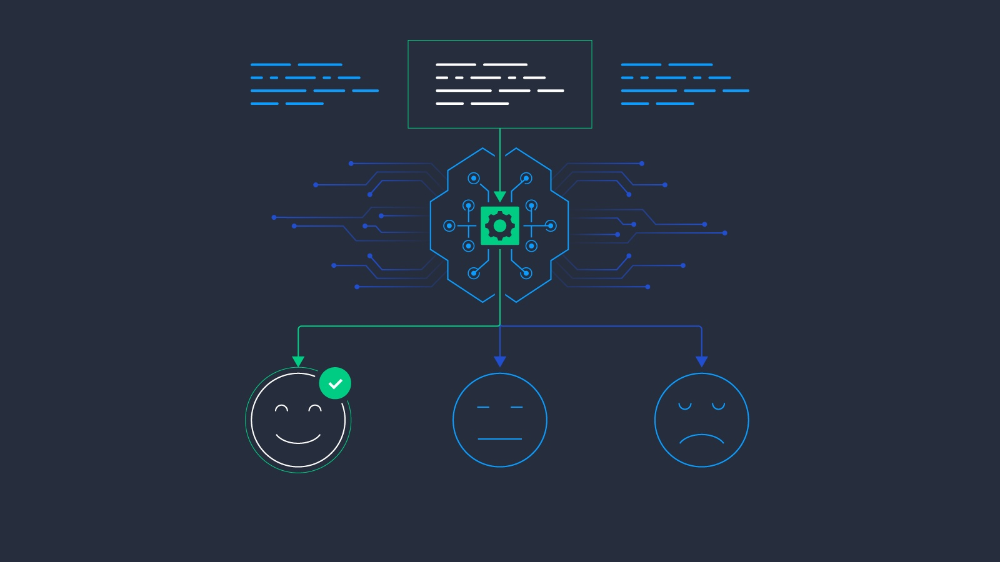

I am a Data Scientist with 2.5 years of experience at Morgan Stanley post my master’s degree from Columbia University, I joined my current team as a new grade as Associate in 2021. My performance consistently exceeds expectations, earning recognition within my current team for delivering high-quality work. I’m confident in understanding stakeholder needs and translating them into actionable solutions. Partial quotes from my colleagues: "fast to understand complex request"; "consistently being positive and collaborative attitude"; "attention to details, intuitive, responsive, analytical, creative".
Over the past few years, I've tackled a wide range of challenges. I've leveraged machine learning to consolidate anti-fraud rules, predict mortgage defaults, assess bond issuer credit risk, detect anomalies in healthcare providers and performed sentiment analysis to aid e-commerce businesses in better understanding customer product preferences. I've also been involved in designing alerting systems for bad actors, creating visually appealing and user-friendly metric monitoring and reporting platforms that became the department's golden source. Moreover, I've contributed to reshaping data strategy and logic to develop data products, as well as automating routine reporting tasks within the department to enhance decision-making efficiency.
My Project Portfolio
In my view, data science is like a compass guiding us through the maze of challenges, whether we're navigating machine learning algorithms or diving into NLP techniques. It's not just about crunching data, features; it's about unraveling complexities and transforming abstract business puzzles into actionable insights. That's why effective communication is the lifeblood of our work, whether we're collaborating with tech-savvy engineers upstream or decoding business needs downstream. It's about weaving together ideas, bridging gaps, and painting a clear picture that leads to meaningful solutions.
k-means, KNN, PCA, PyOD(Autoencoder, iForest) | Feature Engineering, Anomaly Dtection, Data Cleaning
Deployed unsupervised learning to detect healthcare fraud by analyzing medical data to identify abnormal patterns and mitigate fraudulent activities efficiently.
Tree-based Algorithms, GBM, GLM, AutoML, H2O | Feature Engineering, Parameter Tuning, Ensemble Exploration, Model Evaluation, SHAP Values
Utilized predictive models to identify and manage default risks in mortgage portfolios, ensuring financial stablity and regulatory compliance.

Web Scraping, Word Cloud, NLP, Decision Tree etc.
Enhanced an e-commerce bedding retailer's revenue with targeted distribution strategies and product improvements based on sentiment analysis of webscraped Amazon reviews.
Decesion Trees, Random Forest, GLM | Data Wrangling, Feature Engineering, Parameter Tuning, Model Evaluation
This credit risk modeling project uses the Financial Beneish model for feature engineering, labels from past credit ratings of bond issuers, building a predictive model for safe bond investment advice.
Plotly, Seaborn, Matplotlib etc.| Data Wrangling, Data Visulisation, Insight Mining
Employed a wide array of techniques to delve into topics such as consumer transaction behaviors, merchant distribution patterns, potential insider trading in financial markets, and anomalies in healthcare, among others.
Tableau| Dashboard, Self Serve Platform, Storytelling
A Tableau-based metrics monitoring and data retrieval platform, crafted to be highly interactive, enabling stakeholders to instantly access the data they need for timely decision-making.
Explored Topics Overview
- Data Preprocessing
- Feature Engineering
- Data Visualization
- Data Mining
- Data Architecture & Management
- Platform Modernization
- Machine Learning Algorithms
- Model Evaluation & Validation
- Reporting Dashboard & Metric Monitoring
Skills Mastery Showcase
SELECT skills
FROM chloe_technique_base
WHERE 'Obtained'='Yes' AND 'Class' = 'Languages and Database';
Output: ['Python', 'PySpark', 'SQL', 'Tableau',
'Plotly', 'HTML', 'R', 'MS Office Suite']
SELECT skills
FROM chloe_technique_base
WHERE 'Obtained'='Yes' AND 'Class' = 'Libraries and Frameworks';
Output: ['Numpy', 'Pandas', 'Scikit-Learn', 'XG Boost',
'H2O', 'TensorFlow', 'Keras', 'Seaborn', 'Matplotlib']
SELECT skills
FROM chloe_technique_base
WHERE 'Obtained'='Yes' AND 'Class' = 'Platform';
Output: ['Dataiku', 'Github', 'Tableau']
DIVE INTO chloe_treasure_vault
SEEKING talents
WHERE 'Quest_Status'='Journey Ahead';
Treasure Found: ['Eagerness to Learn']
My World Outside the 9 to 5 üôÖü誂Äç‚ôÄÔ∏èüíº
Fun and Leisure: The lighter side of me
⭐️ An Adventure Skier⛷️
For my birthday this year, I tackled the Aspen Highland Bowl. The hour-long hike was full of nature's sounds, leading to stunning views. Skiing down was thrilling, a mix of fun and challenge.

This year, I also ventured to Zermatt, Switzerland, where the iconic Matterhorn and pristine slopes offered a breathtaking new chapter in my mountain adventures.
So far, I've hit the slopes at 10 ski resorts, including Aspen, Jackson Hole, Big Sky, Snowbasin, Zermatt, and more!
‚≠êÔ∏è A dog parentüê∂
I have a three-year-old Pomeranian.

{kind=link}
{kind=link}
{kind=link}
{kind=link}
{kind=link}
{kind=link}